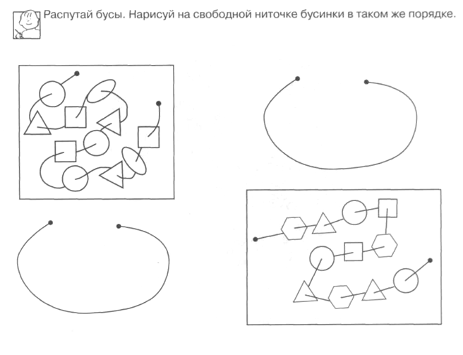
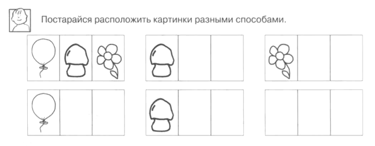

Программа дополнительного образования по психологической подготовке детей к школе «СКОРО В ШКОЛУ» (для детей 5-7 лет)
Содержание
ВВЕДЕНИЕ
Целенаправленная подготовка ребенка к школе, существующая в настоящее время, подразумевает, что ребенок должен прийти в школу с определенным запасом знаний, умений и навыков. Таким образом, уровень развития ребенка до школы во многом определяется степенью его обученности этим умениям и навыкам. Такое представление о психическом развитии ребенка вытекает из американской теории бихевиоризма, в которой психическое развитие сводится к совокупности усвоенных человеком навыков и форм поведения.
В отечественной психологии на протяжении всего ХХ столетия развивался принципиально иной подход к пониманию психического развития человека. В работах Л.С. Выготского было разработано понятие психологического возраста, характеризующегося определенными параметрами. Каждый возрастной период, если он полноценно прожит, заканчивается определенными характеристиками психического развития ребенка, на которых строится развитие в следующем возрастном периоде. В силу такого понимания развития каждый возрастной этап уникален, и им нельзя пренебрегать. Если ребенок вместо ведущей деятельности будет в основном заниматься другим видом деятельности, то полноценного психического развития не происходит. В дошкольном возрасте ведущей деятельностью является игра, которая исчерпывает свое развивающее влияние к семи годам. Поэтому семь лет – это рубеж между дошкольным и младшим школьным возрастом. В психологии доказано, что в семь лет исчезает непосредственное поведение ребенка, поэтому с семи лет возможно эффективное обучение по школьному типу. В это время ребенок уже может подчиниться правилам поведения на уроке без излишней перегрузки нервной системы, кроме того, в силу возникающих психологических новообразований, семилетний первоклассник сам хочет стать учеником и выполнять роль ученика со всеми необходимыми правилами. Однако все это происходит в том случае, если развитие ребенка до семи лет проходило преимущественно в игровой деятельности. Следует заметить, что в настоящее время первоклассники развиты хуже, чем их сверстники в середине прошлого века, вследствие того, что начиная с 5,5 – 6 лет сегодняшние дошкольники почти не играют, а в основном учатся в подготовительных к школе группах. При этом следует отметить, что дети все равно оказываются неготовыми к школе, более того они готовы к ней в меньшей степени, чем их сверстники пятьдесят лет тому назад, которых специально к школе не готовили.
Психологические исследования показывают, что подготовка к школе в форме выработки простейших школьных знаний, умений и навыков не имеют ничего общего с психологической готовностью к школьному обучению, которая не формируется на занятиях по школьному типу. Психологическая готовность к школе – это психологические предпосылки к овладению учебной деятельностью, которая формируется внутри ведущей деятельности, присущей дошкольному возрасту, то есть в игре.
В качестве предпосылок к овладению учебной деятельностью в отечественной психологии выделяются следующие:
· Наличие познавательных и социальных мотивов учения;
· Умение ребенка работать по образцу;
· Умение ребенка работать по правилу;
· Умение ребенка слушать взрослого и выполнять его инструкцию;
· Умение ребенка обобщать.
Это основные параметры психического развития ребенка, на которые опирается начальное обучение в школе. Если ребенок хочет учиться, умеет работать по образцу и следовать заданному правилу, может применить правило на аналогичном задании, то такой ребенок эффективно будет осваивать азы учения и достаточно быстро продвигаться вперед.
В этот период переход от дошкольного детства к школьному, как указывала Л.И. Божович (1968), характеризуется не только изменением места ребенка в системе отношений, но и всего образа его жизни. При этом положение школьника создает особую моральную направленность личности ребенка. Учение осознается и переживается ребенком как его собственная трудовая обязанность, участие в повседневной жизни окружающих людей. Именно поэтому успех или неуспех в учебных делах имеет для ребенка острую аффективную окраску. Следовательно, вопросы школьного обучения — это не только вопросы образования, интеллектуального развития ребенка, но и формирования его личности. В связи с этим и возникла необходимость разработать и внедрить в образовательный процесс программу дополнительной подготовки ребенка к обучению в школе «Скоро в школу».
В программе выделены три основных параметра, по которым определяется готовность ребенка к обучению в школе:
- уровень общего развития ребенка;
- самоконтроль;
- мотивация учения.
Всякая психическая функция формируется и преобразуется в процессе взаимодействия ребенка и взрослого, поэтому задача психолога осуществлять подготовку ребенка к школе через зону ближайшего развития внутри ведущей игровой деятельности.
Пояснительная записка
Накопление ребенком самостоятельно и под руководством взрослых необходимого социального опыта способствует раскрытию возрастного потенциала дошкольника, успешной подготовке к обучению в школе, а позднее - к взрослой жизни. Из этого следует, что именно в дошкольном возрасте закладываются основы социальной зрелости (компетентности) ребенка, определяя траектории развития и успешной адаптации в меняющемся социуме.
Под социальной компетентностью дошкольника мы понимаем качество личности, сформированное в процессе активного творческого освоения социальных отношений, возникающих на разных этапах и разных видах социального взаимодействия, а также усвоение ребенком этических норм, являющихся основой построения и регулирования межличностных и внутриличностных социальных позиций, отношений.
Особое место в процессе формирования социальной компетентности подрастающего поколения занимает игровая деятельность.
Влияние игры на формирование навыков социальной компетентности личности дошкольника заключается в том, что, благодаря игровому подражанию и ролевому перевоплощению он знакомится с нормами и моделями поведения и взаимоотношений детей и взрослых людей, которые становятся образцами для его собственного поведения. В игре ребенок приобретает основные навыки социальной компетентности, необходимые для установления контакта и развития взаимодействия с окружающим миром.
Для того, чтобы прогнозировать успешность обучения ребенка в школе, необходимо учитывать способность к анализу и синтезу материалов. Представленных в виде рисунков, графиков, таблиц и схем. Важны также: умение проводить аналогии, классификации и обобщения, общая осведомленность ребенка. Следует учитывать уровень развития внимания. Зрительной памяти (основной упор в начальном обучении идет на зрительное восприятие информации), мелкой моторики руки.
В своей деятельности психологу следует опираться и на личностные особенности детей. К моменту поступления в школу у ребенка должен быть достаточно развит самоконтроль, умение общаться с людьми, ролевое поведение, самостоятельность. Без хорошей работоспособности вряд ли можно рассчитывать на прочное усвоение достаточно большого объема знаний, на формирование сложных умений и навыков.
Бесспорно, что чем лучше готов ребенок ко всем изменениям, связанным с началом обучения, к трудностям, которые неизбежны, тем спокойнее будет проходить процесс адаптации в школе.
А предлагаемая программа психологической подготовки детей к школе «Скоро в школу» (для детей 5-7 лет) позволяет подготовить ребенка к школе в ходе игровых занятий, где учитываются особенности его психического развития, полученные в результате диагностики (на диагностическом этапе).
ЦЕЛЬ:
Развитие социальной компетентности и подготовка ребенка к обучению в школе.
ЗАДАЧИ:
1. Развивать у ребенка предпосылки к учебной деятельности: коммуникативные и поведенческие навыки, познавательные процессы (внимание, мышление, память, речь, общую и мелкую моторику).
2. Формировать волевые качества, эмоционально – положительное отношение к школе.
УЧЕБНЫЙ ПЛАН
Программа рассчитана с учетом возрастных особенностей. Комплекс занятий направлен на развитие пяти взаимосвязанных психических процессов, определяющих познавательные возможности, и включает соответствующие разделы: «Тонкая моторика руки», «Внимание», «Память», «Мышление», «Речь». На каждом занятии проводится психомышечная тренировка для снятия мышечного и эмоционального напряжения.
Программа рассчитана на 1 год обучение детей с 5 до 7 лет
№ п/п |
Разделы программы |
Количество часов |
||
неделю |
месяц |
год |
||
1. |
Развитие мелкой моторики |
2 |
8 |
64 |
2. |
Мышление |
2 |
8 |
64 |
3. |
Речь |
2 |
8 |
64 |
4. |
Память |
2 |
8 |
64 |
5. |
Внимание |
2 |
8 |
64 |
6. |
Упражнения для снятия мышечного и эмоционального напряжения (Релаксация) |
2 |
8 |
64 |
Продолжительность занятий 30-35 минут. За счет того, что деятельность постоянно меняется, дети данной возрастной группы легко проводят данное время и не устают.
УЧЕБНО-ТЕМАТИЧЕСКИЙ ПЛАН
Октябрь
№ занятия |
Познавательные цели |
Содержание занятия |
Дидактический материал |
1 |
Развитие мелкой моторики Развитие способности устанавливать закономерность Обучения навыкам анализа и рассуждения Развитие зрительной памяти Обучение способности к переключению внимания и концентрации Снятие мышечного и эмоционального напряжения, развитие воображения и фантазии |
«Фонарики» «Братья - ленивцы» «Чего не хватает» Картина «Удачная рыбалка» «Запомни картинки» «Хлопни в ладоши» «Зачеркни букву» Психомышечная тренировка «Жмурки» |
Не требуется Карточки с заданием (прил.13 Картина Картинки Не требуется Шарф |
2 |
Развитие мелкой моторики Развитие способности устанавливать закономерность Обучения навыкам анализа и рассуждения Развитие зрительной памяти Обучение способности к переключению внимания и концентрации Снятие мышечного и эмоционального напряжения, развитие воображения и фантазии |
«Фонарики» «Братья - ленивцы» «Чего не хватает» Картина «Удачная рыбалка» «Запомни картинки» «Хлопни в ладоши» «Зачеркни букву» Психомышечная тренировка «Жмурки» |
Не требуется Карточки (прил. 14 Картина Картинки Не требуется Шарф |
3 |
Развитие мелкой моторики Развитие способности выделять черты сходства и различия по существенным признакам; Развитие фантазии Развитие использовать мнемонические приемы для запоминания текста Обучение способности концентрации, объема, переключения, устойчивости внимания Снятие напряжения, обучение моделированию внешних проявлений чувств |
«Братья - ленивцы» «Заготавливаем капусту» «Сравнение предметов» Картина «Удачная рыбалка» «У оленя дом большой» «Портрет» «Зачеркни букву» Психомышечная тренировка. «Отражение» |
Не требуется Пары слов Картина Не требуется Вырезка из газеты или журнала (10X10 см), карандаш, кукла Не требуется |
4 |
Развитие мелкой моторики Развитие способности выделять черты сходства и различия по существенным признакам; Развитие способности пересказывания Развитие использовать мнемонические приемы для запоминания текста Обучение способности концентрации, объема, переключения, устойчивости внимания Снятие напряжения, обучение моделированию внешних проявлений чувств |
«Братья - ленивцы» «Заготавливаем капусту» «Сравнение предметов» Картина «Удачная рыбалка» «У оленя дом большой» «Портрет» «Зачеркни букву» Психомышечная тренировка. «Отражение» |
Не требуется Пары слов Картина Не требуется Вырезка из газеты или журнала (10X10 см), карандаш, кукла Не требуется |
5 |
Развитие мелкой моторики Развитие способности устанавливать закономерность Обучение составлению предложений по опорным словам, развитие речи. Развитие активного внимания, Развитие объема кратковременной слуховой памяти Обучение рефлексии; снятие эмоционального напряжения |
«Братья - ленивцы» «Теремки» «Чего не хватает?» Картина «Удачная рыбалка» «Слушай музыку» «Ушки на макушке» «Каскад слов» «Ловушка» |
Не требуется Прил. 13 Картина Магнитофон Список слов Не требуется |
6 |
Развитие любознательности Развитие способности устанавливать закономерность Обучение составлению предложений по опорным словам, развитие речи. Развитие активного внимания, Развитие объема кратковременной слуховой памяти Обучение рефлексии; снятие эмоционального напряжения |
Разминка «Чего не хватает?» Картина «Удачная рыбалка» «Слушай музыку» «Ушки на макушке» «Каскад слов» «Ловушка» |
Не требуется Приложение Картина Магнитофон Список слов Не требуется |
7 |
Развитие мелкой моторики Развитие умения классифицировать предметы по существенным признакам и обобщать Обучения навыкам анализа и рассуждения Развитие зрительной памяти Обучение способности концентрации, объема Тренировка на дифференуиацию заданий взрослого |
«Теремки» «Бабочка» «Четвертый лишний» Картина «Новогодняя елка» «Запомни картинки» «Корректурные пробы» «Ушки на макушке» «Делай то, что я говорю и показываю» |
Не требуется Пять карточек, которых изображены четыре предмета, один – лишний Картина Картинки Приложение 2 Не требуется |
8 |
Развитие мелкой моторики Развитие умения классифицировать предметы по существенным признакам и обобщать Обучения навыкам анализа и рассуждения Развитие зрительной памяти Обучение способности концентрации, объема Тренировка на дифференциацию заданий взрослого |
Прописывание узоров в тетради «Четвертый лишний» Картина «Новогодняя елка» «Запомни картинки» «Корректурные пробы» «Ушки на макушке» «Делай то, что я говорю и показываю» |
Тетрадь Пять карточек, которых изображены четыре предмета, один – лишний Картина Картинки Приложение 2 Не требуется |
Ноябрь
№ занятия |
Познавательные цели |
Содержание занятия |
Дидактический материал |
9 |
Развитие мелкой моторики Развитие способности устанавливать закономерность Развитие фантазии Развитие объема кратковременной слуховой памяти Развитие активного внимания, умения соотносить свои действия со звучанием инструментов Обучение приемам и методам овладения своим волнением |
«Заготавливаем капусту» «Проведи линию по середине дорожки, не отрывая карандаш от бумаги» «Бусы» Картина «Новогодняя елка» «Каскад слов» «Бубен и колокольчик» «Корректурные пробы» «Приятное воспоминание» |
Не требуется Приложение Приложение 15 Картина Список слов Бубен и колокольчик Не требуется |
10 |
Развитие мелкой моторики Развитие способности устанавливать закономерность Развитие фантазии Развитие объема кратковременной слуховой памяти Развитие активного внимания, умения соотносить свои действия со звучанием инструментов Обучение приемам и методам овладения своим волнением |
«Заготавливаем капусту» «Проведи линию по середине дорожки, не отрывая карандаш от бумаги» «Бусы» Картина «Новогодняя елка» «Каскад слов» «Бубен и колокольчик» «Приятное воспоминание» |
Не требуется Приложение Приложение 8 Картина Список слов Бубен и колокольчик, Не требуется |
11 |
Развитие мелкой моторики Развитие способности устанавливать закономерность Обучение составлению предложений по опорным словам, развитие речи. Обучение навыкам запоминания образца, ситуации Обучение способности концентрации внимания на ощущениях своего тела Снятие мышечного и эмоционального напряжения |
«Братья ленивцы» «Помоги зайчатам добраться до дома. Проведи линию по середине дорожки» «Клумба» Картина «Новогодняя елка» «Что изменилось» «Бубен, колокольчик, дудочка», «Пульс» «Тряпичная кукла» |
Не требуется Приложение Приложение 16 Картина Две картинки с изображением одной и той же комнаты; на одной из картинок предметы переставлены и находятся в другом порядке Не требуется |
12 |
Развитие мелкой моторики Развитие способности устанавливать закономерность Обучение составлению предложений по опорным словам, развитие речи. Обучение навыкам запоминания образца, ситуации Обучение способности концентрации внимания на ощущениях своего тела Снятие мышечного и эмоционального напряжения |
«Братья ленивцы» «Помоги зайчатам добраться до дома. Проведи линию по середине дорожки» «Клумба» Картина «Новогодняя елка» «Что изменилось» «Бубен, колокольчик, дудочка», «Пульс» «Тряпичная кукла» |
Не требуется Приложение Приложение 16 Картина Две картинки с изображением одной и той же комнаты; на одной из картинок предметы переставлены и находятся в другом порядке Не требуется |
13 |
Развитие мелкой моторики Развитие умения классифицировать предметы по существенным признакам и обобщать Обучения навыкам анализа и рассуждения Развитие преднамеренного запоминания и припоминания, долговременной памяти Развитие слухового внимания, увеличение объема внимания Снятие мышечного и эмоционального напряжения, развитие воображения и фантазии |
«Теремки», «Дорисуй картинку. Соедини линии по пунктирам» «Четвертый лишний» Картина «Конфета с сюрпризом» «Запомни и покажи» (Таблицы Ф.Е. Рыбакова) «Узор», «Выложи кружочки» «Скульптура» |
Приложение Пять карточек, на каждой из которых изображены четыре предмета, один – лишний Картина Таблицы Ф.Е. Рыбакова (прил. Тетрадный лист в клеточку и карандаш, Два набора по пять кружочков одного диаметра, но разного цвета Не требуется |
14 |
Развитие мелкой моторики Развитие умения классифицировать предметы по существенным признакам и обобщать Обучения навыкам анализа и рассуждения Развитие преднамеренного запоминания и припоминания, долговременной памяти Развитие слухового внимания, увеличение объема внимания Снятие мышечного и эмоционального напряжения, развитие воображения и фантазии |
«Теремки», «Дорисуй картинку. Соедини линии по пунктирам» «Четвертый лишний» Картина «Конфета с сюрпризом» «Запомни и покажи» (Таблицы Ф.Е. Рыбакова) «Узор», «Выложи кружочки» «Скульптура» |
Приложение Пять карточек, на каждой из которых изображены четыре предмета, один – лишний Картина Таблицы Ф.Е. Рыбакова (прил. Тетрадный лист в клеточку и карандаш, Два набора по пять кружочков одного диаметра, но разного цвета Не требуется |
15 |
Развитие мелкой моторики Развитие способности устанавливать закономерность в изображении на основе зрительного и мыслительного анализа Развитие фантазии Обучение навыкам запоминания текста с помощью мнемонических приемов. Развитие умения переключать слуховое внимание, выполнять действия согласно показанной картинке Обучение целенаправленному управлению мышцами лица; обучение свойствам невербального общения |
«Бабочка», «Обведи рисунок точно по линиям, не отрывая карандаш от бумаги» «Чего не хватает?» Картина «Конфета с сюрпризом» «Купим мы, бабушка…» «Узор», «Погода» «Улыбка» |
Приложение Приложение 13 Картина Не требуется Тетрадный лист, Картинки с изображением солнышка, тучки и дождика; зонт Не требуется |
16 |
Развитие мелкой моторики Развитие способности устанавливать закономерность в изображении на основе зрительного и мыслительного анализа Развитие фантазии Обучение навыкам запоминания текста с помощью мнемонических приемов. Развитие умения переключать слуховое внимание, выполнять действия согласно показанной картинке Обучение целенаправленному управлению мышцами лица; обучение свойствам невербального общения |
«Бабочка», «Обведи рисунок точно по линиям, не отрывая карандаш от бумаги» «Чего не хватает?» Картина «Конфета с сюрпризом» «Купим мы, бабушка…» «Узор», «Погода» «Улыбка» |
Приложение Приложение 14 Картина Не требуется Тетрадный лист, Картинки с изображением солнышка, тучки и дождика; зонт Не требуется |
Декабрь
№ занятия |
Познавательные цели |
Содержание занятия |
Дидактический материал |
17 |
Развитие мелкой моторики Развитие способности устанавливать закономерность Обучение составлению предложений по опорным словам, развитие речи. Обучение навыкам запоминания образа, ситуации в условиях уменьшения времени Развитие концентрации внимания, переключения Усиление положительного эмоционального переживания |
«Птица»,«Дорисуй картинку. Соедини линии по пунктирам» «Зонтики» Картина «Конфета с сюрпризом» «Что изменилось?» «Погода», «Найди отличия» «Встречаемся и прощаемся с улыбкой» |
Приложение Приложение 17 Картина Две картинки с изображением одного и того же эпизода, но с перестановкой Две картинки с похожими изображениями одного и того же предмета |
18 |
Развитие мелкой моторики Развитие способности устанавливать закономерность Обучение составлению предложений по опорным словам, развитие речи. Обучение навыкам запоминания образа, ситуации в условиях уменьшения времени Развитие концентрации внимания, переключения Усиление положительного эмоционального переживания |
«Птица»,«Дорисуй картинку. Соедини линии по пунктирам» «Зонтики» Картина «Конфета с сюрпризом» «Что изменилось?» «Погода», «Найди отличия» «Встречаемся и прощаемся с улыбкой» |
Приложение Карточки с заданием Картина Две картинки с изображением одного и того же эпизода, но с перестановкой Две картинки с похожими изображениями одного и того же предмета |
19 |
Развитие мелкой моторики Развитие способности устанавливать закономерность Обучения навыкам анализа и рассуждения Развитие целенаправленного запоминания и припоминания Обучение способности концентрации, объема, переключения, устойчивости внимания Усиление положительных эмоциональных переживаний; поднятие настроения |
«Гости», «Обведи рисунок точно по линиям, не отрывая карандаш от бумаги» «Загадка» Картина «В огороде» «Спрячь игрушки» Дорисуй каждому домику окошко, яблоку – веточку, а цветочку – серединку, «Найди отличия» «От улыбки станет всем светлей …» |
Приложение Карточки с заданием Картина Три игрушки Две картинки с похожими изображениями одного и того же предмета Текст песни |
20 |
Развитие мелкой моторики Развитие способности устанавливать закономерность Обучения навыкам анализа и рассуждения Развитие целенаправленного запоминания и припоминания Обучение способности концентрации, объема, переключения, устойчивости внимания Усиление положительных эмоциональных переживаний; поднятие настроения |
«Гости», «Обведи рисунок точно по линиям, не отрывая карандаш от бумаги» «Загадка» Картина «В огороде» «Спрячь игрушки» Дорисуй каждому домику окошко, яблоку – веточку, а цветочку – серединку, «Найди отличия» «От улыбки станет всем светлей …» |
Приложение Карточки с заданием Картина Три игрушки Две картинки с похожими изображениями одного и того же предмета Текст песни |
21 |
Развитие мелкой моторики Развитие способности устанавливать закономерность Развитие фантазии Развитие целенаправленного запоминания и припоминания Обучение способности концентрации, объема, переключения, устойчивости внимания Снятие мышечного и эмоционального напряжения |
«Птица», Нарисуй внутри больших фигур постепенно уменьшающиеся фигуры, а вокруг маленьких – постепенно увеличивающиеся. «Квадрат» Картина «В огороде» «Найди игрушки» Найди выделенные фрагменты и обведи их «Тряпичная кукла» |
Приложение 19 Картина Три игрушки Приложение 4 Не требуется |
22 |
Развитие мелкой моторики Развитие способности устанавливать закономерность Развитие фантазии Развитие целенаправленного запоминания и припоминания Обучение способности концентрации, объема, переключения, устойчивости внимания Снятие мышечного и эмоционального напряжения |
«Птица», Нарисуй внутри больших фигур постепенно уменьшающиеся фигуры, а вокруг маленьких – постепенно увеличивающиеся. «Квадрат» Картина «В огороде» «Найди игрушки» Найди выделенные фрагменты и обведи их «Тряпичная кукла» |
Карточки с заданием (прил Картина Три игрушки Приложение 4 Не требуется |
23 |
Развитие мелкой моторики Развитие мыслительных процессов обобщения, отвлечение, выделения существенных признаков Обучение составлению предложений по опорным словам, Развитие произвольной памяти Обучение способности концентрации, объема, переключения, устойчивости внимания Снятие мышечного и эмоционального напряжения, развитие воображения и фантазии |
«Гости», Проведи карандашом от удочки до рыбки. Кто из ребят, какую рыбку поймал? «Найди лишнее слово» Картина «В огороде» «Рассмотри внимательно» Найди в квадрате следующие слова: мяч, слон, облако, дом. «Скульптура» |
Приложение Серии слов Картина Приложение Приложение 6 Не требуется |
24 |
Развитие мелкой моторики Развитие мыслительных процессов обобщения, отвлечение, выделения существенных признаков Обучение составлению предложений по опорным словам, Развитие произвольной памяти Обучение способности концентрации, объема, переключения, устойчивости внимания Снятие мышечного и эмоционального напряжения, развитие воображения и фантазии |
«Гости», Проведи карандашом от удочки до рыбки. Кто из ребят, какую рыбку поймал? «Найди лишнее слово» Картина «В огороде» «Рассмотри внимательно» Найди в квадрате следующие слова: мяч, слон, облако, дом. «Скульптура» |
Приложение Серии слов Картина Приложение Приложение 6 Не требуется |
Январь
№ занятия |
Познавательные цели |
Содержание занятия |
Дидактический материал |
25 |
Развитие мелкой моторики Развитие умения классифицировать предметы по существенным признакам и обобщать Обучения навыкам анализа и рассуждения Развитие целенаправленного запоминания и припоминания Развитие концентрации внимания Обучение приемам ритмичного дыхания для снятия напряжения; |
«Теремки», Обведи рисунок точно по линиям, не отрывая карандаш от бумаги «Четвертый лишний» Картина «Первое свидание» «Кто не на месте?» «Чем отличаются картинки» «Дыхание» |
Приложение Пять карточек, на каждой из которых изображены четыре предмета, один – лишний Десять игрушек Две картинки с похожим сюжетом Не требуется |
26 |
Развитие мелкой моторики Развитие умения классифицировать предметы по существенным признакам и обобщать Обучения навыкам анализа и рассуждения Развитие целенаправленного запоминания и припоминания Развитие концентрации внимания Обучение приемам ритмичного дыхания для снятия напряжения; |
«Теремки», Обведи рисунок точно по линиям, не отрывая карандаш от бумаги «Четвертый лишний» Картина «Первое свидание» «Кто не на месте?» «Чем отличаются картинки» «Дыхание» |
Приложение Пять карточек, на каждой из которых изображены четыре предмета, один – лишний Десять игрушек Две картинки с похожим сюжетом Не требуется |
27 |
Развитие мелкой моторики Развитие мыслительных операций анализа и сравнения Развитие фантазии Развитие произвольного внимания и наблюдательности Развитие концентрации внимания Обучение целенаправленному управлению мышцами лица; |
«Братья - ленивцы», Дорисуй картинку и раскрась. «Угадай предмет» Картина «Первое свидание» «Рассмотри внимательно» Распутай бусы. «Улыбка» |
Приложение 5 картинок с изображением знакомых ребенку предметов Картина Сюжетная картинка Приложение 15 Не требуется |
28 |
Развитие мелкой моторики Развитие мыслительных операций анализа и сравнения Развитие фантазии Развитие произвольного внимания и наблюдательности Развитие концентрации внимания Обучение целенаправленному управлению мышцами лица; |
«Братья - ленивцы», Дорисуй картинку и раскрась. «Угадай предмет» Картина «Первое свидание» «Рассмотри внимательно» Распутай бусы. «Улыбка» |
Приложение 5 картинок с изображением знакомых ребенку предметов Картина Сюжетная картинка Приложение 15 Не требуется |
29 |
Развитие мелкой моторики Развитие аналитического мышления Обучение составлению предложений по опорным словам, развитие речи. Развитие целенаправленного запоминания и припоминания Развитие концентрации внимания Усиление положительных эмоциональных переживаний |
«Гости», Дорисуй картинку и раскрась «Мячик» Картина «Первое свидание» «Кто не на месте?» Какие слова спрятались в рамочке? Прочитай. «Встречаемся и прощаемся с улыбкой» |
Приложение Мяч Картина Десять игрушечных животных Приложение 8 |
30 |
Развитие мелкой моторики Развитие аналитического мышления Обучение составлению предложений по опорным словам, развитие речи. Развитие целенаправленного запоминания и припоминания Развитие концентрации внимания Усиление положительных эмоциональных переживаний |
«Гости», Дорисуй картинку и раскрась «Мячик» Картина «Первое свидание» «Кто не на месте?» Какие слова спрятались в рамочке? Прочитай. «Встречаемся и прощаемся с улыбкой» |
Приложение Мяч Картина Десять игрушечных животных Приложение 8 |
31 |
Развитие мелкой моторики Развитие мыслительных операций анализа и сравнения Развитие целенаправленного запоминания и припоминания Развитие концентрации внимании Снятие мышечного и эмоционального напряжения |
«Заготавливаем капусту» Нарисуй по клеткам точно такой же рисунок «Угадай предмет» «Кто не на месте?» Посчитай и запиши, сколько раз встречается каждая буква и цифра «Тряпичная кукла» |
Приложение 15 картинок 10 игрушек Приложение 7 Не требуется |
32 |
Развитие мелкой моторики Развитие мыслительных операций анализа и сравнения Развитие целенаправленного запоминания и припоминания Развитие концентрации внимании Снятие мышечного и эмоционального напряжения |
«Заготавливаем капусту» Нарисуй по клеткам точно такой же рисунок «Угадай предмет» «Кто не на месте?» Посчитай и запиши, сколько раз встречается каждая буква и цифра «Тряпичная кукла» |
Приложение 15 картинок 10 игрушек Приложение 7 Не требуется |
Февраль
№ занятия |
Познавательные цели |
Содержание занятия |
Дидактический материал |
33 |
Развитие мелкой моторики Развитие мыслительных ассоциативных связей Развитие фантазии Развитие объема кратковременной слуховой памяти Обучение способности концентрации, объема Снятие мышечного и эмоционального напряжения |
«Птица», Дорисуй вторую половинку картинки. «Мостик» Картина «Попугай Петруша» «Каскад слов» Расставь значки в соответствии с цифрами «Скульптура» |
Приложение Пять пар картинок Картина Список слов Приложение 9 Не требуется |
34 |
Развитие мелкой моторики Развитие мыслительных ассоциативных связей Развитие фантазии Развитие объема кратковременной слуховой памяти Обучение способности концентрации, объема Снятие мышечного и эмоционального напряжения |
«Птица», Дорисуй вторую половинку картинки. «Мостик» Картина «Попугай Петруша» «Каскад слов» Расставь значки в соответствии с цифрами «Скульптура» |
Приложение Пять пар картинок Картина Список слов Приложение 9 Не требуется |
35 |
Развитие мелкой моторики Развитие аналитического мышления Обучение составлению предложений по опорным словам, развитие речи. Развитие зрительной памяти Обучение способности концентрации, объема Расслабление, снятие напряжения, эмоциональная разрядка |
Нарисуй на второй паре носочков и рукавичек точно такой же рисунок. «Аналогии» Картина «Попугай Петруша» «Запомни картинки» Найди все предметы, которые спрятались на рисунке «Кляксы» |
Приложение Мяч Картина 5 картинок Приложение 10 Большой лист бумаги, гуашь |
36 |
Развитие мелкой моторики Развитие аналитического мышления Обучение составлению предложений по опорным словам, развитие речи. Развитие зрительной памяти Обучение способности концентрации, объема Расслабление, снятие напряжения, эмоциональная разрядка |
Нарисуй на второй паре носочков и рукавичек точно такой же рисунок. «Аналогии» Картина «Попугай Петруша» «Запомни картинки» Найди все предметы, которые спрятались на рисунке «Кляксы» |
Приложение Мяч Картина 5 картинок Приложение 10 Большой лист бумаги, гуашь |
37 |
Развитие мелкой моторики Развитие аналитического мышления Обучения навыкам анализа и рассуждения Развитие произвольного внимания Формирование внимания, развитие скорости реакции Обучение переходу из одного эмоционального состояния в противоположное |
Раскрась игрушки на елке в соответствии с их формой. «Мячик» Картина «Настоящий друг» «Рассмотри внимательно» «Кого назвали, тот и лови» «Шапка – невидимка» |
Приложение Мяч Картина Сюжетная картин Мяч Не требуется |
38 |
Развитие мелкой моторики Развитие аналитического мышления Обучения навыкам анализа и рассуждения Развитие произвольного внимания Формирование внимания, развитие скорости реакции Обучение переходу из одного эмоционального состояния в противоположное |
Раскрась игрушки на елке в соответствии с их формой. «Мячик» Картина «Настоящий друг» «Рассмотри внимательно» «Кого назвали, тот и лови» «Шапка – невидимка» |
Приложение Мяч Картина Сюжетная картин Мяч Не требуется |
39 |
Развитие мелкой моторики Развитие аналитического мышления Развитие фантазии Развитие зрительной памяти Обучение способности концентрации внимания Обучение управлению своим состоянием |
Раскрась картинку в соответствии с цифрами «Аналогии» Картина «Настоящий друг» «Запомни картинки» «Колпак мой треугольный» «Качели» |
Приложение Мяч Картина Сюжетная картинка Не требуется Не требуется |
40 |
Развитие мелкой моторики Развитие аналитического мышления Развитие фантазии Развитие зрительной памяти Обучение способности концентрации внимания Обучение управлению своим состоянием |
Раскрась картинку в соответствии с цифрами «Аналогии» Картина «Настоящий друг» «Запомни картинки» «Колпак мой треугольный» «Качели» |
Приложение Мяч Картина Сюжетная картинка Не требуется Не требуется |
Март
№ занятия |
Познавательные цели |
Содержание занятия |
Дидактический материал |
41 |
Развитие мелкой моторики Развитие способности устанавливать закономерность Развитие навыка пересказывания Развитие слуховой памяти Развитие объема внимания Расслабление, снятие напряжения |
Разобрать горох и фасоль в разные емкости «Сыщик» Слушаем и пересказываем «Стихотворение» «Исключение лишнего» «Радуга» |
Горох, фасоль Схема кабинета Рассказ Не требуется Приложение Музыка |
42 |
Развитие мелкой моторики Развивать способности выделять черты сходства и различия Учить составлять рассказ по вопросам Развитие целенаправленного запоминания Развитие моторно-двигательного внимания Расслабление, снятие напряжения |
Разобрать гречку и рис в разные емкости «Сравнение предметов» «Рассказ» «Стихотворение» - повторение «Черепашки» «Отдых на море» |
Гречка, рис Пары слов Вопросы Текст стихотворения Не требуется Музыка |
43 |
Развитие мелкой моторики Развитие умения классифицировать Составлениеь предложения по опорным словам Развитие объема кратковременной слуховой памяти Развитие моторно-двигательного внимания Расслабление, снятие напряжения |
Выложить узор из спичек по образцу «Четвертый лишний» «Предложения» «Каскад слов» «Колпак мой треугольный» «Дождь в лесу» |
Спички, узор Карточки Опорные слова Список слов Не требуется Музыка |
44 |
Развитие мелкой моторики Развитие способности к анализу Пополнения запаса знаний Развитие зрительной памяти Развитие сенсорного внимания Расслабление, снятие напряжения |
Выложить узор из спичек по образцу «Сложи узор» «Почемучка» «Запомни картинки» «Поставь столбик на место» «Поза покоя» |
Спички, узор Кубики Б.П. Никитина Вопросы Картинки Очень быстрая музыка Музыка |
45 |
Развитие мелкой моторики Развитие мыслительных процессов Развитие способности к анализу Развитие зрительной памяти Развитие слухового внимания Снятие напряжения |
Раскрась картинку в соответствии с цифрами. «Найди лишнее слово» Проблемная картинка «Запомни, а затем ответь на вопросы» «Узнай по голосу» «Подснежник» |
Серии слов Картина Картинка, вопросы Шарфик Музыка |
46 |
Развитие мелкой моторики Развитие способности выделять свойства предметов; развитие логического мышления Развитие фантазии Развитие долговременной памяти Обучение концентрации внимания Расслабление, снятие напряжения |
Графический диктант «Тонет – не тонет» Проблемная картинка Разучивание стихотворения «Муха» «Зернышко» |
Тетрадь Таз с водой; пустой флакон и флакон, заполненный песком; теннисный и металлический шарики; деревянный брусок и камень; бумажный лист и стакан Картина Текст стихотворения Квадрат 10*10 Аудио-запись |
47 |
Развитие мелкой моторики Развитие способности к анализу Составление предложения по опорным словам Развитие долговременной памяти Развитие слухового внимания Расслабление, снятие напряжения |
Графический диктант «Сложи узор» «Предложения» Повторение стихотворения «Что слышно» «Путешествие в волшебный лес» |
Тетрадь Кубики Б.П. Никитина Опорные слова Не требуется Лист бумаги, вода в стакане, пустая емкость Музыка |
48 |
Развитие мелкой моторики Развитие способности выделять свойства предметов; развитие логического мышления Развитие активного внимания Обучение слушанию и пересказыванию Развитие зрительной памяти Снятие напряжения |
Дорисуй вторую половинку картинки. «Тонет – не тонет» «Деревья, птицы, овощи, фрукты» Рассказ «Запомни и ответь на вопросы» «Песенка дельфина» |
Таз с водой; пустой флакон и флакон, заполненный песком; теннисный и металлический шарики; деревянный брусок и камень; бумажный лист и стакан Текст Мяч Картинка Музыка |
Апрель
№ занятия |
Познавательные цели |
Содержание занятия |
Дидактический материал |
49 |
Развитие мелкой моторики Развитие мышления Развитие умения рассуждать Развитие зрительной памяти Развитие активного внимания |
Графический диктант «Найди овощу свое место» «Сюжетная картинка» «Запомни и ответь на вопросы» «Съедобное - несъедобное» |
Тетрадь Таблица. Фигурки овощей и фруктов Картинка Картинка Мяч |
50 |
Развитие мелкой моторики Развитие мышления Пополнение запаса знаний Развитие слуховой памяти Развитие моторно-мышечного внимания |
Разобрать горох и фасоль «Исключение лишнего» «Вопросы» Разучивание стихотворения «Сороконожка» |
Горох, фасоль Приложение Не требуется Текст стихотворения Не требуется |
51 |
Развитие мелкой моторики Развитие способности выделять черты сходства и различия по существенным признакам Развитие фантазии Развитие слуховой памяти Развитие активного внимания Снятие напряжения, развитие эмпатии |
Выложить узор из счетных палочек Сравни две картинки «Сюжетная картинка» Чтение стихотворения и вопросы «Что под шляпой» «Торт» |
Счетные палочки Картинки Картинка Текст стихотворения Небольшие предметы 6-7 шт. Не требуется |
52 |
Развитие мелкой моторики Развитие способности выделять черты сходства и различия по существенным признакам Развитие умения пересказа Развитие навыкам запоминания образа Развитие слухового внимания |
Разобрать гречку и рис Сравни предметы между собой «Рассказ» «Что изменилось?» «Кто знает, пусть дальше считает» |
Гречка, рис Не требуется Текст Две картинки с изображением одной и той же комнаты; на одной из картинок предметы переставлены Мяч |
53 |
Развитие мелкой моторики Развитие умения классифицировать по существенным признакам и обобщать Развитие умения составлять рассказ по вопросам Развитие объема кратковременной памяти Развитие осязательного внимания |
Пальчиковая гимнастика «Классификация» «Рассказ» «10 слов» «Чудесный мешочек» |
Не требуется Картинки Вопросы Список слов Вата, стеклянный шарик, кубик, резиновая игрушка, металлическая деталь и др. |
54 |
Развитие мелкой моторики Развитие способности устанавливать последовательность событий Развитие умения дополнять незаконченные предложения Развитие умения использовать мнемонические приемы для запоминания текста Развитие слухового внимания |
Графический диктант «Что сначала, что потом» «Я читаю» «У оленя дом большой» «Испорченный телефон» |
Тетрадь Картинки Не требуется Не требуется Не требуется |
55 |
Развитие мелкой моторики Развитие логического мышления Развитие умения связывать концовки и начало предложений Развитие целенаправленного запоминания и припоминания Развитие концентрации и объема внимания |
Обведи рисунок точно по линиям, не отрывая карандаш от бумаги «Логика» «Я читаю» «Кто не на месте» Нанизывание бусинок по образцу |
Приложение Логические задачи Не требуется 10 игрушек Бусинки |
56 |
Развитие мелкой моторики Развитие способности к умозаключениям Развитие умения составлять рассказ по вопросам Развитие целенаправленного запоминания и припоминания Развитие слухового внимания |
Проведи линию по середине дорожки «Закончи предложения» «Рассказ» «Спрячь игрушки» «Испорченный телефон» |
Приложение Не требуется Вопросы 3 игрушки Не требуется |
Май
№ занятия |
Познавательные цели |
Содержание занятия |
Дидактический материал |
57 |
Развитие мелкой моторики Развитие способности к умозаключениям Развитие умения составлять рассказ по вопросам Развитие целенаправленного запоминания и припоминания Формирование внимания, скорости реакции Закрепление положительного эмоционального эффекта |
Нарисуй узор «Закончи предложения» «Рассказ» «Найди игрушки» «Кого назвали, тот и лови» «Доброе животное» |
Не требуется Не требуется Вопросы 3 игрушки Большой мяч Не требуется |
58 |
Развитие мелкой моторики Развитие логического мышления Развитие фантазии Развитие зрительной памяти Формирование внимания, скорости реакции Закрепление положительного эмоционального эффекта |
Дорисуй картинку «Логика» «Сюжетная картинка» «Запомни картинку» «Кого назвали, тот и лови» «Эстафета дружбы» |
Приложение Логические задачи Картинка Не требуется Большой мяч Не требуется |
59 |
Развитие мелкой моторики Развитие способности к умозаключениям Пополнение запаса знаний Развитие слуховой памяти Обучение способности концентрации, объема, переключения, устойчивости внимания Закрепление положительного эмоционального эффекта |
Нарисуй внутри больших фигур постепенно уменьшающиеся фигуры, а вокруг маленьких – постепенно увеличивающиеся. «Правильно лм рассуждают ребята» «Почемучка» Разучивание стихотворения «Корректурные пробы» «Эстафета дружбы» |
Приложение Утверждения Не требуется Текст стихотворения Приложение 2 Не требуется |
60 |
Развитие мелкой моторики Развитие пространственного мышления Развитие умения составлять предложения по опорным словам Развитие слуховой памяти Развитие слухового внимания Закрепление положительного эмоционального эффекта |
Разбери гречку и рис Подбери подходящий фрагмент «Предложения» Повторение стихотворения «Узор» «Солнечные лучики» |
Гречка, рис Карточки Не требуется Текст стихотворения Тетрадь, карандаш Не требуется |
61 |
Развитие мелкой моторики Развитие пространственного мышления Развитие умения пересказа Развитие объема кратковременной слуховой памяти Развитие слухового внимания Закрепление положительного эмоционального эффекта |
Графический диктант Подбери подходящий фрагмент «Пересказ» «Каскад слов» «Узнай по голосу» «Доброе животное» |
Не требуется Карточки Текст рассказа Список слов Шарфик Не требуется |
62 |
Развитие мелкой моторики Развитие пространственного мышления Развитие умения составлять рассказ по вопросам Развитие объема кратковременной слуховой памяти Развитие переключения внимания Снятие напряжения |
Выложи узор по образцу Подбери подходящий фрагмент «Рассказ» «Каскад слов» Быстрее нарисуй «Торт» |
Спички Карточки Вопросы Список слов Приложение 3 Не требуется |
63 |
Развитие любознательности Развитие внимания Развитие опосредованного запоминания Развитие мышления Снятие напряжения |
Разминка «Найди 10 отличий» «Дорисуй узоры» «Опосредованное запоминание» «Загадки», «Добавляйте пропущенные слова» «Оценка» |
Не требуется Картинки Картинка: аист, овощи, мухомор, кукла, туфли, роза Предложение с пропущенными словами Флажки: красные, сини, желтые, зеленые |
64 |
Развитие моторной ловкости Развитие любознательности Развитие памяти Развитие мышления Развитие речи Развитие внимания |
«Выкладывание из счетных палочек» Разминка «10 слов» «Загадки», «Задачи-шутки» «Рассказываем сказку» «Большой - маленький» |
Счетные палочки Не требуется Список слов Загадки Набор геометрических фигур Не требуется |
СОДЕРЖАНИЕ ПРОГРАММЫ
Программа «Скоро в школу» предусматривает следующие формы организации:
1. Фронтальное (подгрупповое) занятие – 2 раза в неделю.
2. Индивидуальная работа.
Структура занятий по психологической подготовке детей к школе состоит из следующих этапов:
1 часть – развитие мелкой моторики;
2 часть – развитие мышления;
3 часть – развитие речи;
4 часть – развитие памяти;
5 часть – развитие внимания;
6 часть – снятие эмоционального напряжения, релаксация.
Вначале даются игры и упражнения на развитие мелкой моторики: пальчиковые игры, прописывание узоров, а затем букв в тетради. Далее идут игры и упражнения на развитие познавательных процессов.
В заключительной части каждого игрового занятия проводится церемония прощания – рефлексия. Совместное обсуждение и переживание как положительных, так и отрицательных эмоций объединяет детей, порождает у них желание поддерживать друг друга.
1. «Развитие мелкой моторики»
Развитие координированных движений мелких мышц, составляющих кисть руки необходимо для того, чтобы ребенок писал правильно, красиво и легко. Развитие тонкой моторики стимулирует развитие интеллектуальных способностей в целом.
Задачи:
· Подготовить руку к овладению безотрывным письмом (развивать тонкую моторику пальцев руки и мышцы кисти);
· Научить детей ориентироваться в пространственных категориях: право-лево, вверх-низ;
· Упражнять в написании печатного шрифта.
2. «Развитие мышления»
Мышление ребенка в возрасте 6-7 находится «в плену» его житейского опыта: он не может установить связи и отношения предметов логическим путем. Умение мыслить подразумевает: выделение существенных признаков предмета; синтез различных признаков в целое представление о предмете; сравнение предметов и выявление различий в них и т.д.
Задачи:
· Содействовать развитию наглядно-образного мышления;
· Развивать сообразительность, любознательность;
· Развивать мыслительные операции;
· Развивать логическое мышление;
· Учить выделять существенные признаки.
3. «Развитие речи»
Речь – это не только средство общения, но и орудие мышления, творчества, носитель памяти, информации, средство самопознания и т.д.
Любой язык, несмотря на свои индивидуальные различия, имеет следующие компоненты: фонетика, лексика, грамматика. Когда мы говорим о развитии речи дошкольника, становление языковой системы которого еще не закончено, то понимаем под этим совершенствование всех указанных компонентов языковой системы.
Задачи:
· Расширять и активизировать словарный запас;
· Пополнять запас знаний и сведений;
· Развивать воображение, фантазию;
· Побуждать детей задавать вопросы на интересующие их темы.
4. «Развитие памяти»
Психолог должен научить ребенка различным формам пользования памятью. Все виды памяти тесно взаимосвязаны между собой и не изолированы друг от друга. Экспериментально доказано, что человек может запомнить любой объем материала, однако извлечь его из памяти – лишь при внешнем стимулировании определенных зон головного мозга. Для детей более естественно запоминание материала, включенного в игровую деятельность.
Задачи:
· Развивать непроизвольную и произвольную память;
· Развить зрительную и слуховую память.
5. «Развитие внимания»
Уровень развития внимания во многом определяет успешность обучения ребенка в школе. Ребенок может долго на чем-то удерживать свое внимание, пока не угаснет интерес. Внимание и интерес неразделимы. Поэтому игры и упражнения по развитию внимания должны быть непременно интересны для ребенка. Но в дальнейшем, обучаясь в школе, ему придется выполнять ряд заданий, предполагающих удержание внимания волевым усилием. Поэтому для будущих первоклассников очень важно развитие произвольного внимания, которое развивается постепенно, по мере развития отдельных его свойств (объема, концентрации, распределения, переключения, устойчивости).
Задачи:
· Развивать сенсорное внимание:
· Развивать слуховое внимание;
· Развивать моторно-двигательное внимание.
6. «Содействие становлению учебной мотивации»
Существенный момент мотивационной готовности к школьному
обучению – произвольность поведения и деятельности, т.е. возникновение у ребенка потребностей и мотивов такой структуры, при которой он становится способным подчинять свои непосредственные импульсивные желания сознательно поставленным целям.
Задачи:
· Развивать познавательные мотивы учения (пробуждать у ребенка познавательный интерес; расширять кругозор детей)
· Содействовать формированию мотива достижения по типу «стремление к успеху» (уважительно и внимательно относиться к потребностям и достижениям ребенка; эмоционально поощрять успехи ребенка и попытки овладеть чем-то новым)
· Способствовать формированию социальных мотивов учения (способствовать формированию у детей положительного образа школы и положительного образа ученика; создавать у детей установку, что пока они маленькие, они не ходят в школу, а в школу принимают только тех детей, кто становится постарше и хочет серьезно учиться, как взрослые).
7. «Снятие эмоционального напряжения»
На каждом занятии проводится психомышечная тренировка для снятия мышечного и эмоционального напряжения. В этой части занятия дети могут поделиться тем, что им понравилось или не понравилось, что для них было тяжело, а что легко, похвалить себя за проделанную работу.
Программа рассчитана на 1 год обучения (2 занятия в неделю) и состоит из следующих этапов.
ЭТАПЫ РАБОТЫ:
Диагностический -> Развивающий (коррекционно – развивающие занятия) -> Контрольный (диагностический)
|
При составлении программы «Скоро в школу» учитывается принцип комплектности методов психологического воздействия, который утверждает не только необходимость использования всего многообразия методов, техник и приемов из арсенала практической психологии, но и активное привлечение ближайшего социального окружения к участию в данной программе. Ведь окружение ребенка – родители, воспитатели, предметно-развивающая среда – играет решающую роль в его психическом развитии.
КРИТЕРИИ ОЦЕНКИ
В период дошкольного детства интенсивно развиваются все стороны психики ребенка, закладывается фундамент для его дальнейшего роста. Можно назвать три основных направления психического развития дошкольника: личность, деятельность и общение.
Методики, применяемые для изучения особенностей психического развития дошкольников, направлены:
1) На изучение познавательных процессов: внимание, память, мышление;
2) На изучение важнейших сфер личности ребенка: самооценка ребенка, уровень тревожности.
Исходя из половозрастных норм все результаты психологического обследования, представленные в таблицах, выражены в стандартных оценках - от 1 до 10 баллов. Таким образом, через стандартную оценку определяется уровень развития интеллектуальных и личностных особенностей каждого ребенка.
На диагностическом и контрольном этапе используются следующие методики:
Методика «Свободная классификация» (Определение уровня развития элементов логического мышления, уровня обобщения).
Методика «10 слов» (Изучение объема слуховой памяти, элементов ее произвольности).
Методика «Запомни картинки» (Определение уровня развития образной памяти).
Методика «Шифровка» (Изучение уровня концентрации, переключения внимания, зрительно – моторной координации и скорости образования нового навыка).
Методика «Узоры» (Определение уровня сформированности мелкомоторных навыков, зрительно-моторной координации и глазомера).
Методика «Лесенка» (Исследование самооценки).
Методика «Тест тревожности» (Исследование тревожности детей по отношению к ряду типичных для него жизненных ситуаций общения с другими людьми).
К концу учебного года дети приобретают определенный кругозор, запас конкретных умений, овладевают некоторыми способами обследования внешних свойств и предметов. В процессе приобретения знаний формируется необходимая будущему первокласснику интеллектуальная активность, рождается радость познания.
Готовность ребенка к школьному обучению к концу года предполагает наличие у него следующих качеств:
· Организованность, аккуратность;
· Волевые качества;
· Внимание, способность к длительному сосредоточению (15-20 мин.);
· Сообразительность, любознательность;
· Развитая речь и хорошее воображение;
· Хорошая память;
· Моторная ловкость;
· Дружелюбие, умение общаться с детьми и со взрослыми;
· Начальные навыки счета и чтения.
МЕТОДИЧЕСКИЕ РЕКОМЕНДАЦИИ
В этом разделе описываются игры и упражнения на развитие мелкой моторики, на развитие внимания, памяти, мышления. По всем раздела имеются рекомендации родителям педагогам (Приложения 20,21,22).
Игры и упражнения, способствующие развитию мелкой моторики
Пальчиковая гимнастика позволяет развивать не только мелкую моторику и внимание, но и произвольность поведения, за счет стремления четко и правильно выполнить все упражнения. Гимнастику необходимо проводить каждый день до, и после выполнения других упражнений.
1. Массаж пальчиков. Ребенок сам или с помощью взрослого делает массаж каждого пальчика левой и правой руки, начиная с кончиков пальцев через поглаживающие движения, растирающие движения, круговые движения. Повторять массаж пальчиков обеих рук в течение 1-2 минут, заканчивать поглаживающими движениями. Массаж пальчиков проводится в начале, середине (при возникновении усталости) и в конце работы. Массаж ведущей руки делается чаще.
2. Приветствие футболистов. Дотронуться до каждого пальчика-«члена команды» и поздороваться: «Здравствуйте! Здравствуйте!». Ребенок последовательно, в нарастающем темпе, соединяет большой палец руки с указательным, средним, безымянным, мизинцем и обратно
3. Волны. Ребенок пытается сделать «волны» кистями рук (как «умирающий лебедь»).
4. Крестики-нолики. Ребенок поочередно делает «крестики» из указательного и среднего, безымянного пальца и мизинца, а затем повторяет упражнение 2 для этих же пальцев.
5. Колокольчики. Ребенок в течение 30-60 секунд потряхивает кистями рук.
6. Музыка. Ребенок совершает волнообразные движения (вверх-вниз) всеми пальцами руки так, как будто играет на фортепиано.
7. Ножницы. Ребенок пытается соединить пальчики парами и развести пары как можно дальше. Повторить 5 раз. Затем ребенок пытается отвести указательный пальчик от остальных, крепко сжатых.
8. Круги. Ребенок пытается рисовать «круги» в воздухе каждым пальчиком обеих рук.
Игры и упражнения, способствующие развитию внимания
¨ «Да и нет не говорите, черный с белым не носите». Взрослый задает ребенку вопросы. Ребенок отвечает на них, но при этом не должен называть запрещенные цвета и не говорить «да» и «нет».
¨ Игры – головоломки.
¨ Загадки.
¨ «Найди отличия».
¨ «Найди два одинаковых предмета».
¨ «будь внимателен». Выполнение гимнастических упражнений по словесной команде.
¨ «Волшебное слово». Взрослый показывает упражнение, а ребенок их повторяет только в том случае, если взрослый говорит: «Пожалуйста!».
¨ «Где что было». Ребенок запоминает предметы, лежащие на столе; затем он отворачивается. Взрослый передвигает предметы; а ребенок указывает, что изменилось.
¨ «Назови, что ты видишь». Ребенок за 1 мин должен назвать как можно больше предметов, находящихся в комнате.
¨ «Карлики и великаны». Ребенок должен выслушать словесную инструкцию взрослого, не обращая внимания на его действия.
Игры и упражнения для развития памяти
¨ «Запомни предметы». Учить запоминать и воспроизводить информацию.
¨ «Детектив». Развивать произвольное запоминание; ребенок в течение 15 мин. Рассматривает 15 картинок, после чего картинки убирают; ребенок должен назвать картинки, которые запомнил.
¨ «Пирамида». Развивать кратковременную механическую память. Взрослый называет ребенку сначала одно слово, ребенок должен сразу же повторить его; затем взрослый называет два слова, ребенок повторяет их; затем взрослый называет три слова, ребенок – повторяет и т.д.
¨ «Что ты видел в отпуске?» Взрослый задает ребенку вопросы о происходящих в отпуске событиях.
¨ «Следопыт». Взрослый показывает ребенку игрушку и говорит, что сейчас ее спрячет в комнате; ребенок отворачивается; взрослый прячет игрушку; а ребенок должен ее найти.
¨ «Что ты ел на обед?» Ребенок должен перечислить все, что ел на обед.
¨ «Одежда». Ребенок должен вспомнить, в каком порядке он надевал предметы одежды утором.
¨ «Нарисуй такой же». Ребенок рисует на листе бумаги какой – либо простой предмет; затем лист переворачивается и ребенок должен нарисовать такой же предмет.
¨ «Я положил в мешок». Взрослый на глазах ребенка кладет в мешок разные предметы; ребенок должен вспомнить, что лежит в мешочке.
¨ «Короткий рассказ». Взрослый читает короткий рассказ; ребенок должен повторить его.
¨ «Башня». Ребенку показывают схематическое изображение башни, состоящей из множества геометрических фигур; ребенок должен запомнить эти фигуры и назвать их.
¨ «Фигурка из палочек». Взрослый выкладывает фигурку из палочек; ребенок запоминает ее и по памяти выкладывает такую же.
Игры и упражнения для развития мышления
¨ «Разложи картинки». Учить учитывать последовательность событий.
¨ «Закончи слово». Учить заканчивать слово по начальному слогу.
¨ «Найди лишний предмет», «Найди в ряду лишнюю фигурку». Учить классифицировать предметы по признакам и назначению.
¨ «Творческий подход». Ребенку показывают предметы, не имеющие определенного назначения; ребенок должен придумать, как можно использовать данный предмет.
¨ «Антонимы». Ребенку называют слово, а он должен назвать противоположное по смыслу. Например: «тяжелый - легкий», «сильный - слабый», «Твердый - мягкий» и т.д.
¨ «Уникуб», «Лото», «Домино», мозаики, конструкторы.
¨ Загадки.
СПИСОК ЛИТЕРАТУРЫ
1. 500 загадок для детей. – М.; 2003.
2. Абрамова Г.С. Психолог в начальной школе. Волгоград, 1998.
3. Агапова И. А., Давыдова М.А. Комплексная подготовка детей к школе. Книга для детей и взрослых. – М.; 2003.
4. Айзман М.И. и др. Подготовка ребенка к школе. Томск, 1994.
5. Венгер Л.А., Венгер А.Л. Готов ли ваш ребенок к школе? М.; 1994.
6. Гатина О.И. Социально-личностная готовность старших дошкольников к школе./ Воспитатель ДОУ. 2009. - №12. С.48-53.
7. Гуткина Н.И. Новая программа развития детей старшего дошкольного возраста и подготовки их к школе. /Психолог в детском саду. 2007. - №4 С. 47-65.
8. Косина Е. Гимнастика для пальчиков. Развиваем моторику – М.; 2004.
9. Клецова Т.Л. Программа по развитию внимания для детей старшего дошкольного возраста – Тюмень, 2005.
10. Мухина В.С. Возрастная психология. – М.; 2000.
12. Фокина Э. Д. И др. Планирование занятий по развитию познавательных способностей и речи детей в образовательном учреждении. – СПб.; 1995.
Приложение 1.
Психомышечная тренировка
(комплекс упражнений)
1. Давай понюхаем цветок. Покажи, как ты нюхаешь цветы. Раз — поднеси обе руки к носу, представляя, что в них цветы, вдохни их аромат, улыбнись, задержав дыхание. Два — опусти руки, делая выдох. (3—4 раза.)
2. Давай попьем колодезную водичку. Раз — набери воду из колодца. Два — поднеси ладошки с водой ко рту. Смотри, не расплескай воду. Три — попей, сделай вдох. Четыре — стряхни воду с рук и сделай выдох. (3—4 раза.)
3. Я вижу впереди яблоньки с яблоками! Ты хочешь попробовать эти яблочки? Тогда давай пойдем быстрее. (Ребенок встает.)
Раз — подними правую ногу, подержи ее в таком положении, задержи дыхание. Два — опусти ногу, сделай выдох. Три — подними левую ногу, сделай вдох, подержи ногу в таком положении, задержи дыхание. Четыре — опусти левую ногу, сделай выдох. (3—4 раза.)
4. Ложись на пол (на ковер). Поплывем на другой берег реки. (Ребенок ложится на живот, руки вдоль туловища.) Раз — руки вперед со вдохом, задержи дыхание. Два — руки вдоль туловища. Выдох. (2—3 раза.) Теперь перевернись на спину, руки вдоль туловища. Раз — руки вверх со вдохом, задержи дыхание. Два — руки вдоль туловища. Выдох. (2—3 раза.)
5. Смотри, на нашей дорожке появился медведь! Давай испугаемся и сожмемся в комочек. (Ребенок ложится на пол, на ковер.)
Раз — повернись на правый бок и свернись в клубок, делая вдох. Прислушайся, затаив дыхание. Два — выпрямись, делая выдох. Три — повернись на левый бок и свернись в клубок, делая вдох. Четыре — выпрямись, делая выдох. (3—4 раза.)
6. Давай попробуем разглядеть все, что нас ждет в конце
пути. Раз — поверни голову направо, делая вдох. Приглядись,
задержи дыхание. Два — поверни голову вперед, делая выдох.
Три — поверни голову налево, делая вдох. Еще раз приглядись,
задержи дыхание. Четыре — поверни голову вперед, делая выдох.
(3—4 раза.)
7. Выпрямить кисть, плотно сомкнуть пальцы и медленно сжимать их в кулак.
Поочередно выполнять каждой рукой. (5 раз.)
8. Руку плотно положить на стол ладонью вниз и поочередно сгибать пальцы: средний, указательный, большой, мизинец, безымянный. Выполнять поочередно каждой рукой. (5 раз.)
9.Выпрямить кисть и поочередно присоединять безымянный палец к мизинцу, средний к указательному. (5 раз.)
10.Сжать пальцы в кулак и вращать кисть в разных направлениях. Сначала поочередно каждой рукой. (5 раз.) Затем — двумя руками одновременно. (5 раз.)
11.Сгибать и разгибать пальцы. Пальцы раздвинуть как можно шире, затем сомкнуть и так 5 раз поочередно каждой рукой, затем 5 раз сразу обеими руками.
12.Положить руки ладонями вверх. Поднимать по одному пальцы сначала на одной руке, потом на другой. Повторять это упражнение в обратном порядке. (5 раз.)
13.Ладони положить на стол. Поочередно поднимать пальцы сразу обеих рук, начиная с мизинца. (5 раз.)
14.Зажать карандаш средним и указательным пальцами. Затем сгибать и разгибать эти пальцы. (5 раз.)
Приложение 2.
Приложение 3.
Приложение 4.

Приложение 5.
Приложение 6.
Приложение 7.
Приложение 8.
Приложение 9.
Приложение 10.
Приложение 11.
Приложение 12.
Приложение 13.
Приложение 14.
Приложение 15.
Приложение 16.
Приложение 17.
Приложение 18.
Приложение 19.
Приложение 20.
Рекомендации по развитию внимания для родителей и педагогов
¨ Развивать слуховое внимание с помощью дидактических игр.
¨ Часто менять формы деятельности.
¨ Использовать на занятиях элементы игры.
¨ Приучать проговаривать инструкцию игры несколько раз.
¨ Почаще наблюдать и обсуждать с детьми услышанное и увиденное.
¨ Учить сознательно направлять внимание на определенные предметы и явления.
¨ Учить управлять вниманием в соответствии с целью.
¨ Учить сосредотачиваться на известной деятельности, концентрировать свое внимание на ней, не отвлекаясь.
¨ Создавать средства – стимулы, которые будут организовывать внимание ребенка.
¨ Для развития внимания использовать игры с правилами и игры манипуляции.
Приложение 21.
Рекомендации по развитию памяти для родителей и педагогов
¨ Развивать умение произвольно вызывать необходимые воспоминания.
¨ Обучать культуре запоминания.
¨ Учить вспоминать последовательность событий.
¨ Учить использовать при запоминании мнемотехнические приемы.
¨ Учить использовать образ как средство развития произвольной памяти.
¨ Учить повторять, осмысливать, связывать материал в целях запоминания, использовать связи при припоминании.
¨ Способствовать овладению умением использовать для запоминания вспомогательные средства.
Приложение 22.
Рекомендации по развитию мышления для родителей и педагогов
¨ Развивать умственные способности через овладение действиями замещения и наглядного моделирования в различных видах деятельности.
¨ Учить составлять группу из отдельных предметов.
¨ Учить выделять предметы по назначению и характерным признакам.
¨ Учить классифицировать предметы и обобщать их по характерным признакам или назначению.
¨ Учить понимать смысл литературного произведения; воспроизводить в правильной последовательности содержание текста с помощью вопросов.
¨ Учить сравнивать предметы.
¨ Учить соотносить схематическое изображение с реальными предметами.
¨ Развивать быстроту мышления через дидактические игры.
¨ Побуждать делать самостоятельные выводы.
¨ Учить отвечать на вопросы, делать умозаключения.
¨ Создавать сложно организованную среду, чтобы ребенок мог взаимодействовать с разными предметами.
¨ Способствовать познанию свойств различных материалов, их функционального потенциала, созданию образов, моделей реальных предметов посредством изобразительной деятельности (лепки, аппликации, рисования и т.д.).
¨ Учить устанавливать причинно – следственные связи.
¨ Развивать мышление, используя сказки, поговорки, метафоры, образные сравнения.